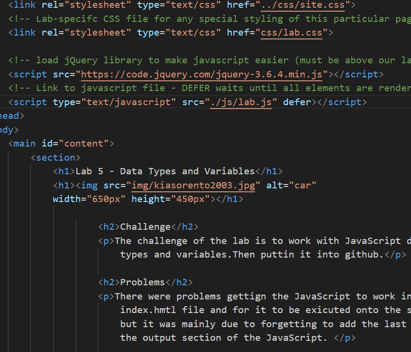

Lab 14 - Debugging Tools & Stategies
Challenge
The challenge of the lab was to debug old labs and fix any issues in the code if the site wasn't working properly.
Problems
I didn't have any issues since I referenced the newest labs to fix any issues, which were mainly spelling issues in the code. There was nothing to major to fix.
Results
The debugging section has the two labs where I found errors. You should be able to see the screenshots.
Debugging

Both had errors because I had 2 JS links so I deleted the second one.